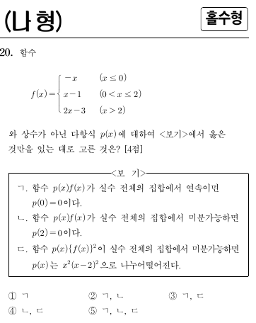

2020학년도 수능 나형 20번 · 객관식 4점 · 정답 ②
실제 수능 문제지다. "나쁜 점"을 \(p(x)\)가 어떻게 메워주는지를 보는 문제다.

* 원문제: 함수 \(f(x)=\begin{cases}-x&(x\le 0)\\x-1&(0<x\le 2)\\2x-3&(x>2)\end{cases}\)와 상수가 아닌 다항식 \(p(x)\)에 대하여 <보기>에서 옳은 것만을 있는 대로 고른 것은? [4점]
<보기> ㄱ. 함수 \(\frac{p(x)}{f(x)}\)가 실수 전체의 집합에서 연속이면 \(p(0)=0\)이다.
ㄴ. 함수 \(p(x)f(x)\)가 실수 전체의 집합에서 미분가능하면 \(p(2)=0\)이다.
ㄷ. 함수 \(p(x)\{f(x)\}^2\)이 실수 전체의 집합에서 미분가능하면 \(p(x)\)는 \(x^2(x-2)^2\)으로 나누어떨어진다.
① ㄱ ② ㄱ, ㄴ ③ ㄱ, ㄷ ④ ㄴ, ㄷ ⑤ ㄱ, ㄴ, ㄷ
\(f(x)\)는 두 군데가 "나쁘다": \(x=0\)에서 끊어지고(불연속), \(x=2\)에서 꺾인다(미분불가). \(p(x)\)를 곱했을 때 전체가 매끄러워지려면, \(p\)가 나쁜 점을 메워줘야 한다. 그런데 끊어진 점과 꺾인 점은 메워주는 방법이 다르다! 이 차이가 ㄷ의 함정이다.
그래프를 그려보자. 어디가 나쁜가?
Q1. \(f(x)\)가 "나쁜" 점과 그 종류는?
정답! \(x=0\)은 끊어지고(점프), \(x=2\)는 꺾인다. 두 종류의 "나쁨"을 구별하는 것이 핵심이다.
\(x=0\)에서 왼쪽 값(0)과 오른쪽 극한(-1)을 비교해보자. \(x=2\)에서는 함수값은 일치하는가? 미분계수는?
\(p(x)\)의 차수를 바꾸며 \(p(x)f(x)\)가 어떻게 매끄러워지는지 보자.
\(y=f(x)\)\(y=p(x)f(x)\) 또는 \(y=p(x)f(x)^2\)
관찰 1 \(k=0\) (\(p=1\)): \(f\)의 끊어짐과 꺾임이 그대로 보인다.
관찰 2 \(k=1\) (\(p=x\)): \(x=0\)의 끊어짐이 메워지기 시작한다. \(x=2\)는?
관찰 3 \(k=2\) (\(p=x^2\)): \(x=0\)이 완전히 매끄러워진다.
나쁜 점을 메우려면 \(p\)가 0이 되어야 한다.
ㄱ. \(\frac{p(x)}{f(x)}\)가 연속. \(f(0)=0\)이므로 분모가 0이다. 분자 \(p(0)\)도 0이 아니면 극한이 발산한다. 따라서 \(p(0)=0\). (ㄱ 참)
ㄴ. \(p(x)f(x)\)가 미분가능. \(x=2\)는 \(f\)의 꺾이는 점이다. 곱의 미분법:
같아지려면 \(p(2)=0\). (ㄴ 참)
Q2. \(x=2\)에서 \((pf)'\)의 좌우가 같아지려면 왜 \(p(2)=0\)이어야 하는가?
정답! \((pf)'(2^+)-(pf)'(2^-)=p(2)(2-1)=p(2)\). 이 차이가 0이 되려면 \(p(2)=0\).
\((pf)'=p'f+pf'\)에서 \(f'\)의 점프(1→2)가 \(p(2)\)와 곱해진다. 점프를 없애려면?
이 문제의 클라이맥스. ㄷ이 왜 거짓인가?
ㄷ은 "\(p(x)\{f(x)\}^2\)이 미분가능하면 \(p(x)\)는 \(x^2(x-2)^2\)으로 나누어떨어진다"고 주장한다.
\(x=0\) (점프 불연속): \(f^2\)도 점프한다 (0→1). \(q=pf^2\)가 미분가능(따라서 연속)하려면:
\(x=2\) (꺾임, 연속): \(f(2)=1\ne 0\). \(q=pf^2\)의 미분:
\(p(2)=0\)이면 좌우 미분계수가 같아진다. \((x-2)^1\)이면 충분하고, \((x-2)^2\)까지는 필요 없다!
따라서 ㄷ의 "\(x^2(x-2)^2\)으로 나누어떨어진다"는 거짓이다. (\(x^2(x-2)\)까지만 보장된다.)
Q3. ㄷ이 거짓인 이유는?
정답! 점프(불연속)는 \(x^2\), 꺾임(미분불가)은 \((x-2)^1\). 나쁜 점의 종류에 따라 메워주는 정도가 다르다. 이것이 이 문제의 함정이다.
\(x=0\)은 \(f\)가 끊어지는 점, \(x=2\)는 \(f\)가 꺾이는 점이다. 각각 \(p\)가 몇 차로 0이 되어야 하는가?
| 점 | \(f\)의 상태 | \(p\)에 필요한 것 |
|---|---|---|
| \(x=0\) | 점프 불연속 | \(x^2\) |
| \(x=2\) | 꺾임 (연속) | \((x-2)^1\) |
ㄱ 참, ㄴ 참, ㄷ 거짓 → ② ㄱ, ㄴ
정답 ②